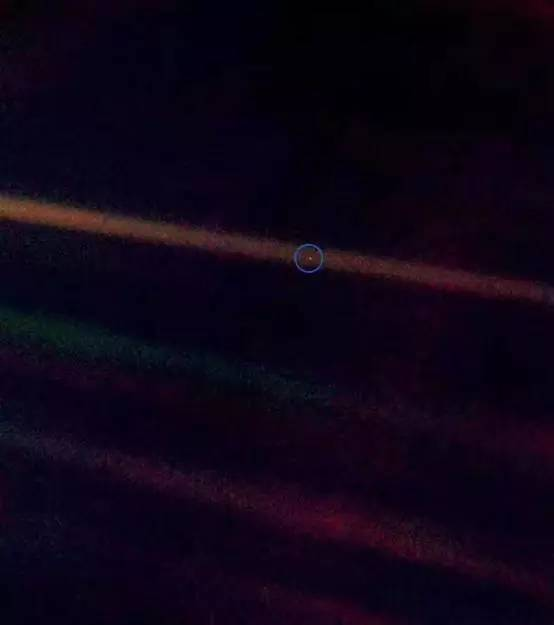

写在开头
Everyone should carefully observe which way his heart draws him, and then choose that way with all his strength.
一张照片

1990年，旅行者1号探测器即将飞出太阳系的时候，在距离地球60亿公里的地方，美国国家航空航天局命令它回头再看一眼，拍摄了60张照片，其中一张上，正好包括了地球——图中那个亮点。
天体物理学家、著名科学作家卡尔·萨根就此说了这段著名的话：
在这个小点上，每个你爱的人、每个你认识的人、每个你曾经听过的人，以及每个曾经存在的人，都在那里过完一生。
生活的态度
有人说过，这世界上只有一种真正的英雄主义：那就是，在看清生活的真相之后，依然热爱生活。
有形的、无形的压迫都是追求更高境界的源动力，大胆的接近向往的生活把。